资源
- GAMES104-现代游戏引擎：从入门到实践_哔哩哔哩_bilibili
- GAMES104 - 现代游戏引擎入门必修课 (boomingtech.com)
- Piccolo 社区 - 游戏引擎爱好者的新家园 (piccoloengine.com)
- BoomingTech/Piccolo: Piccolo (formerly Pilot) – mini game engine for games104 (github.com)
- GAMES104：现代游戏引擎，从理论到实践 - 知乎 (zhihu.com)
课程
第二十节：现代游戏引擎架构：面向数据编程与任务系统
Code Execution Is Not As Simple As It Looks
代码执行并不像看起来那么简单
Code is executed on top of specific hardware and operating system
代码在特定硬件和操作系统上执行
-
Hardware and OS must be considered if we want to write a high performance program
如果我们想编写高性能程序，就必须考虑硬件和操作系统
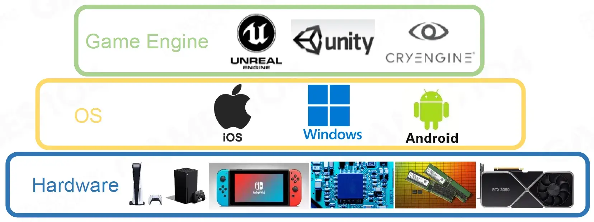
Basics of Parallel Programming
并行程序设计基础
Ceiling of Moore’s Law and Multi-Cores
摩尔定律的上限与多核
-
The number of transistors in a dense integrated circuit (IC) doubles about every two years
密集集成电路（IC）中的晶体管数量大约每两年翻一番
-
In these years, chip densities are no longerdoubling every two years
这些年来，芯片密度不再每两年翻一番
-
Multi-coreprocessorbecomes the new industry trend
多核处理器成为新的行业趋势
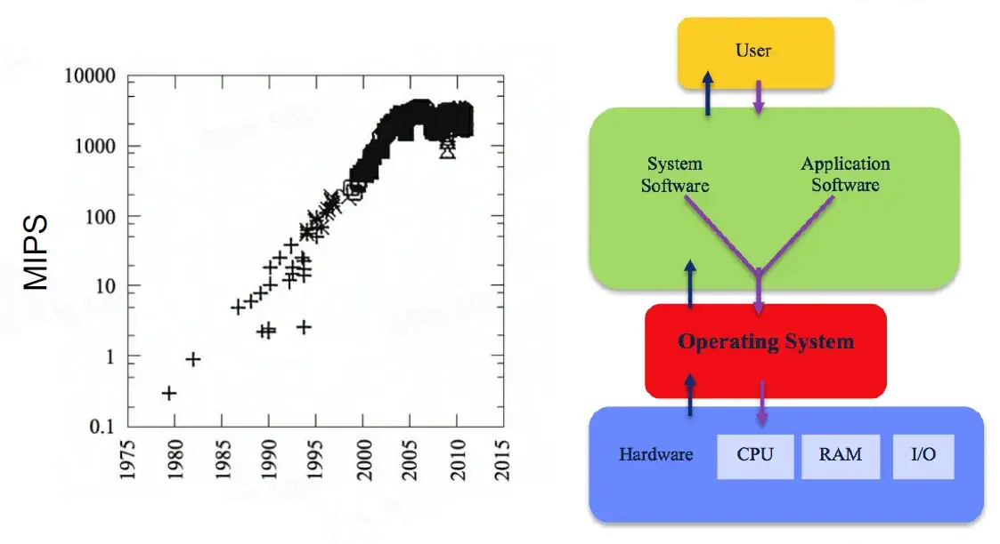
处理器的精度和频率的提升达到了一个瓶颈，添加更多核心成为提升处理器性能的一个趋势。
Process and Thread
进程和线程
Process
进程
-
The instance of an application (or program)
应用程序（或程序）的实例
-
Has its own individual region of memory
有自己的内存空间
Thread
线程
-
Preemptive multitasking
先发制人的多任务处理
-
The smallest unit of task that can be scheduled by OS
操作系统可以调度的最小任务单元
-
Must reside in a process
必须驻留在进程中
-
Threads in the same process share the same region of memory
同一进程中的线程共享同一内存区域（处理不好容易出 bug）
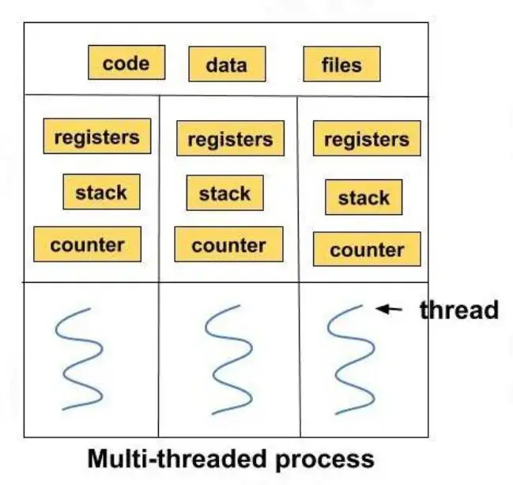
Types of Multitasking
多任务处理的类型
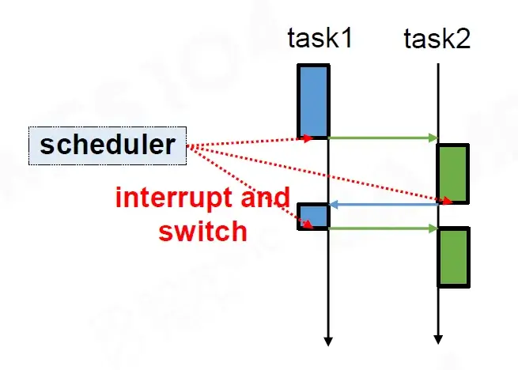
Preemptive Multitasking
先发制人的多任务处理
-
Currently executing task can be interrupted at a time decided by the scheduler
当前正在执行的任务可以在调度程序决定的时间中断
-
Scheduler determines which task to be executed next
调度器确定下一个要执行的任务
-
Applied in most operating systems
适用于大多数操作系统
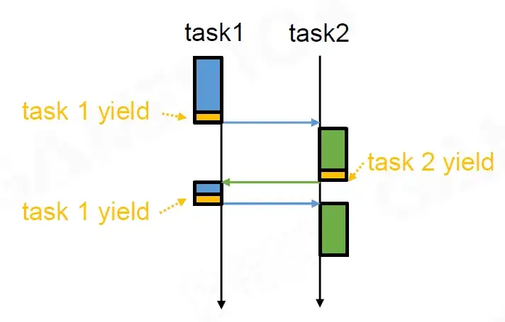
Non-preemptive Multitasking
非抢占式多任务处理
-
Tasks must be explicitly programmed to yield control
任务必须明确编程以实现控制
-
Tasksmust cooperate for the scheduling scheme to work
任务必须配合调度方案才能发挥作用
-
Currently many real-time operating systems (RTOS) also support this kind of scheduling
目前，许多实时操作系统（RTOS）也支持这种调度
Thread Context Switch
线程上下文切换
Store the state of a thread and resume the execution at a later point
存储线程的状态，并在稍后恢复执行
-
State including registers, stack and other OS required data
状态，包括寄存器、堆栈和其他操作系统所需的数据
-
Thread context switch implies extra user-kernel mode switch
线程上下文切换意味着额外的用户内核模式切换
-
Cache invalidation after context switch has even more cost
上下文切换后缓存失效的成本更高
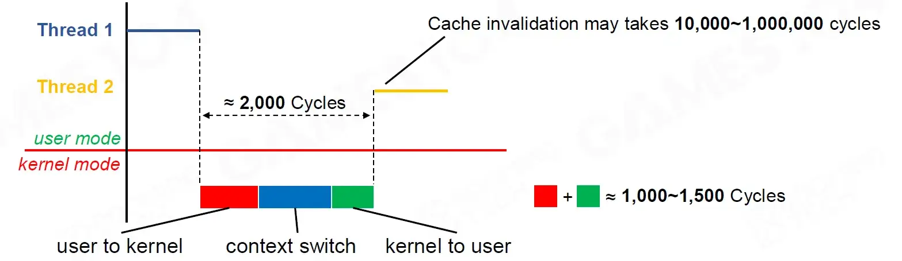
Cache invalidation may takes 10,000~1,000,000 cycles
缓存失效可能需要 10000~1000000 个周期
Parallel Problems in Parallel Computing
并行计算中的并行问题
Embarrassingly Parallel Problem (or Perfectly Parallel)
易并行计算问题（或完全平行问题）
-
Little or no dependency or need for communication between parallel tasks
并行任务之间很少或不需要通信
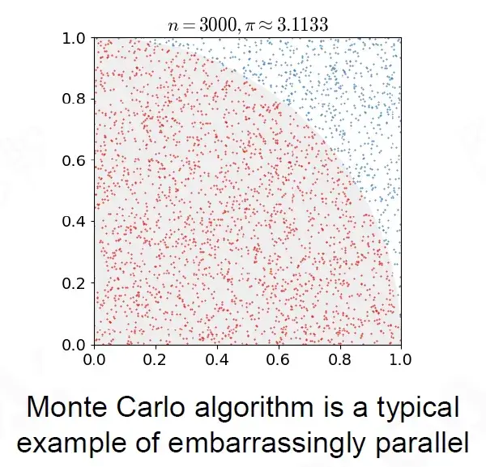
Monte Carlo algorithm is a typical example of embarrassingly parallel
蒙特卡洛算法是易并行计算问题的典型例子（使用多线程计算蒙特卡洛积分）
Non-embarrassingly Parallel Problem
非尴尬的平行问题
-
Communication is needed between parallel tasks
并行任务之间需要通信
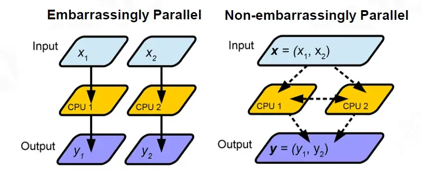
Data Race in Parallel Programming
并行编程中的数据竞争
Multiple threads in a single process access the same memory location concurrently
单个进程中的多个线程同时访问同一内存位置
-
Atleast one of the accesses is for writing
至少有一个入口是用于写作的
1 | |
-
Read job_count
读取 job_count
-
Compute job_count +1
计算任务计数 +1
-
Write new job_count
写新任务计数
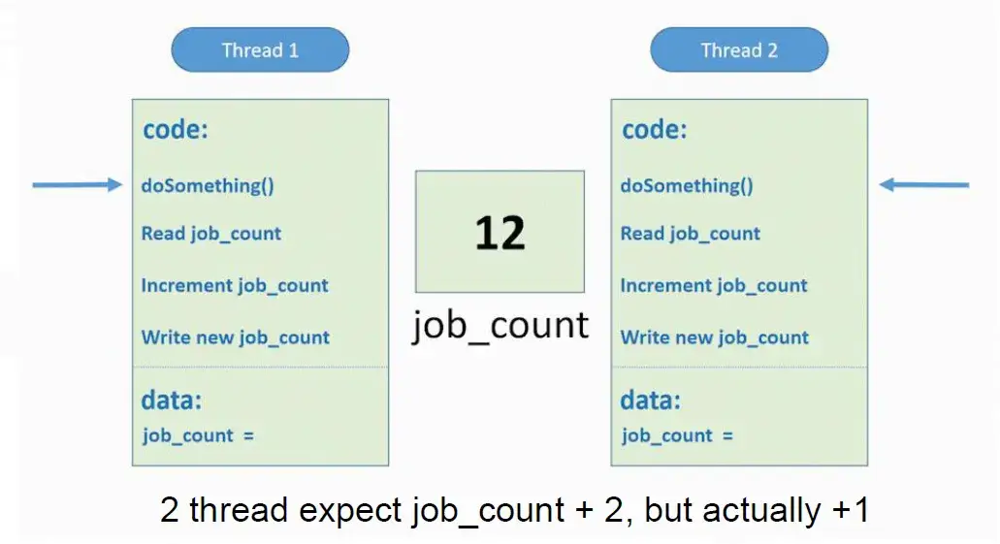
Blocking Algorithm -Locking Primitives
阻塞算法-上锁
Lock
锁
-
Only one thread can acquire the lock at a time
一次只能有一个线程获取锁
-
Make a critical sectionfor shared resource access
创建共享资源访问的关键部分
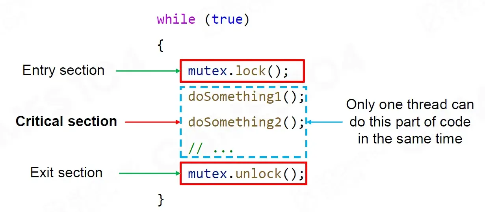
Only one thread can do this part of code in the same time
只有一个线程可以同时执行这部分代码
Other Issues with Locks
锁的其他问题
-
Thread suspending and resuming will bring performance overhead
线程挂起和恢复将带来性能开销
-
Suspending threads never get resumed if the thread that acquires the lock exits abnormally
如果获取锁的线程异常退出，则挂起的线程永远不会恢复
-
Priority Inversion
优先级反转
-
A higher priority task attempts to acquire the lock that is already acquired by a lower priority task
较高优先级的任务试图获取较低优先级任务已经获取的锁
-
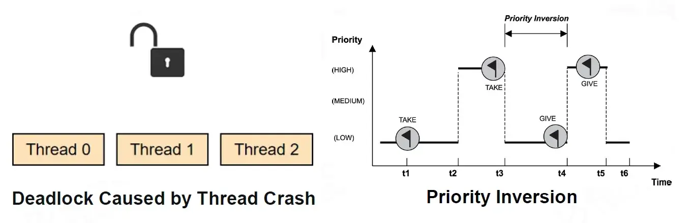
Atomic Operation : Lock-free Programming
原子操作：无锁编程
Atomic Loads and Stores
原子负载和存储
-
Load: Load data from shared memory to either a register or thread-specific memory
加载：将数据从共享内存加载到寄存器或线程特定内存
-
Store: Move data into shared memory
存储：将数据移动到共享内存中
Atomic Read-Modify-Write (RMW)
原子读修改写（RMW）
-
Test and Set: Set 1 to shared memory and return the previous value
测试和设置：将 1 设置为共享内存并返回上一个值
-
CompareandSwap (CAS): Update the data in shared memory if it equals an expected value
比较和交换（CAS）：如果共享内存中的数据等于预期值，则更新该数据
-
Fetch and Add: Add a value to the data in shared memory and return the previous value
提取并添加：向共享内存中的数据添加一个值，并返回上一个值
-
…
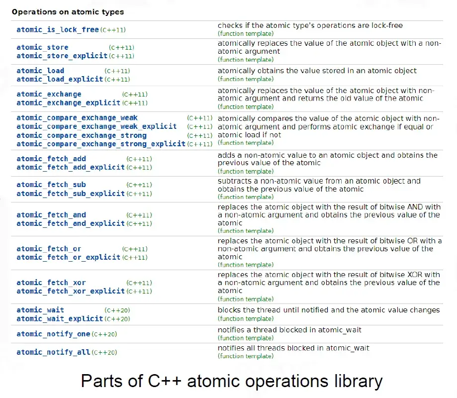
C++11 和 C++20 提供了原子操作的语句。
Lock Free vs. Wait Free
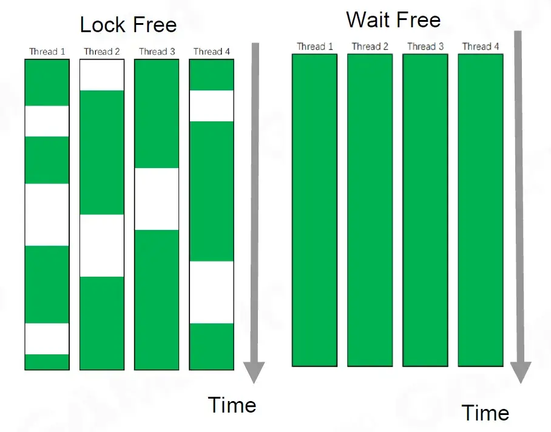
-
wait-free：不管 OS 如何调度线程，每个线程始终在做有用的事情。
-
lock-free：不管 OS 如何调度线程，至少有一个线程在做有用的事情。
Compiler Reordering Optimizations
编译器重新排序优化
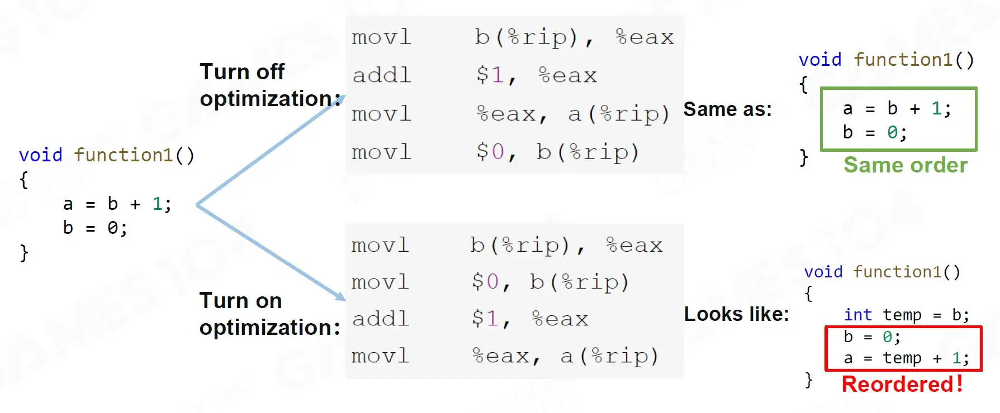
编译器将高级语言汇编成汇编语言时，有可能进行优化操作修改代码的执行顺序，这在单线程中不会有变化，但在多线程中可能出现奇怪情况。
Problem of Memory Reordering
内存重新排序问题
-
Compilers and CPUs often modify the execution order of instructions to optimize performance
编译器和 CPU 经常修改指令的执行顺序以优化性能
-
It’s the hard part of parallel programming
这是并行编程的难点
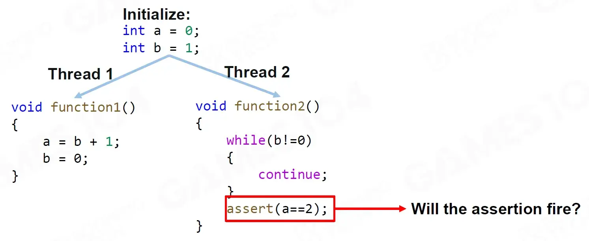
assert是 C/C++ 中的一个宏，用于在运行时检查一个条件是否为真。如果条件不满足，则运行时将终止程序的执行并输出一条错误信息。
如果 Thread 1 进行了编译器优化，则 Thread 2 可能不会在 assert(a==2); 处抛出错误。
Out-of-order Execution by CPUs
CPU 执行顺序错误
For different CPU
适用于不同的 CPU
-
The optimization strategy are significantly different
优化策略明显不同
-
Provides different types of memory order guarantees
提供不同类型的内存顺序保证
-
Parallel programs require different processing
并行程序需要不同的处理
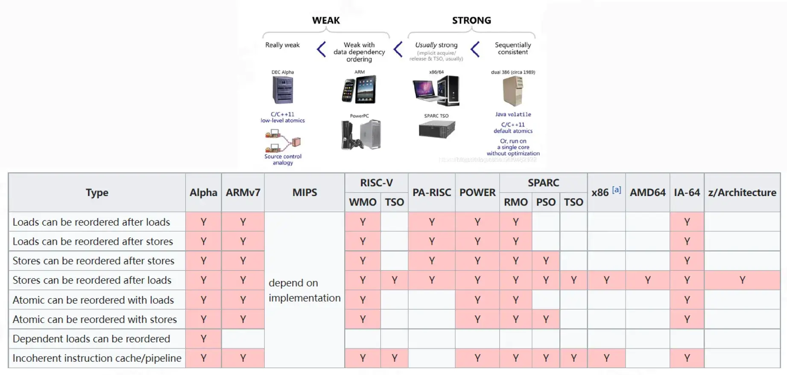
有些 CPU 不保证执行顺序。导致有些代码在平台 A 运行正常，但在平台 B 运行异常。
Parallel Framework of Game Engine
游戏引擎的并行框架
Fixed Multi-thread
固定多线程
One fixed thread for each part of the game engine logic
游戏引擎逻辑的每个部分都有一个固定线程
-
Render, Simulation, Logic, Network, and etc.
渲染、模拟、逻辑、网络等
-
Easy to implement
易于实施
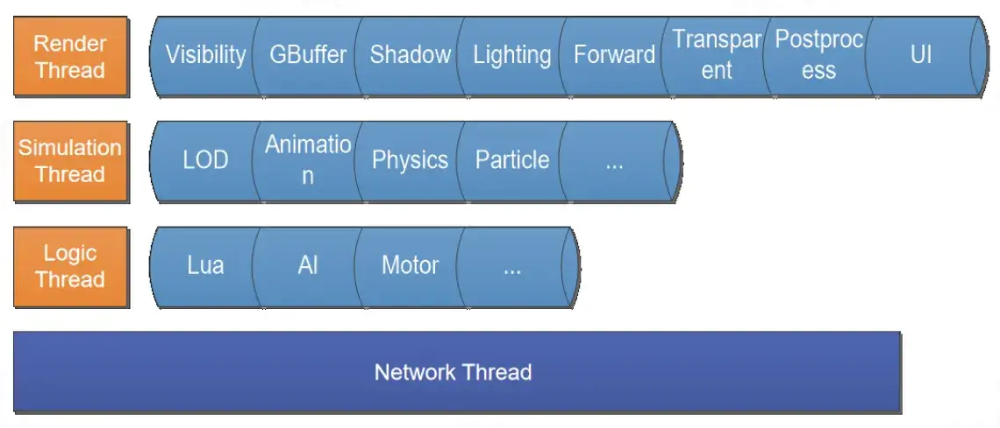
Issues with Fixed Multi-thread
已修复的多线程问题
-
The workload is unbalanced among threads (cores)
线程（核心）之间的工作负载不平衡
-
Unscalable while there are more processor cores
当有更多处理器内核时，无法缩放
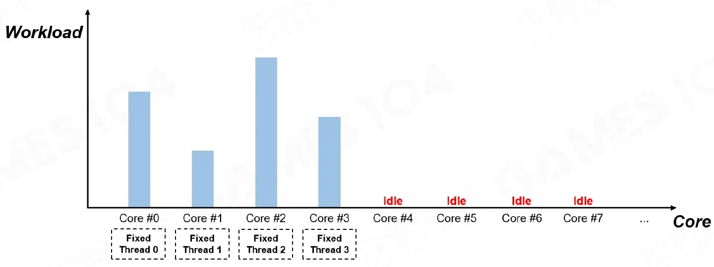
还是容易出现其它核心陪跑的情况。
Thread Fork-Join
螺纹叉连接
Fork-join for data-parallelizable work (based on fixed multi-thread)
用于数据并行工作的分叉连接（基于固定多线程）
-
Use a thread pool to prevent frequent thread creation/destruction
使用线程池来防止频繁的线程创建/销毁
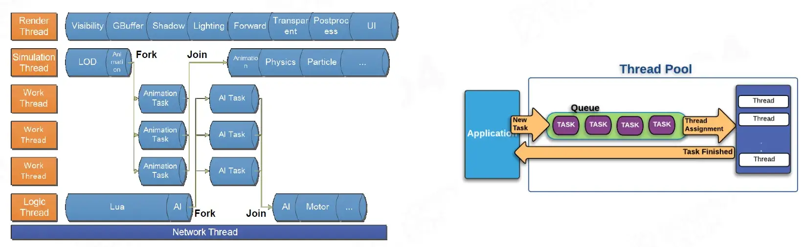
Problems with Thread Fork-Join
螺纹叉连接问题
-
Not easy for logic programmers (work split, work threads count)
逻辑程序员不容易（工作拆分、工作线程计数）
-
Too many threads can bring performance overhead on context switch
太多的线程会给上下文切换带来性能开销
-
The workload is still unbalanced among threads (cores)
线程（核心）之间的工作负载仍然不平衡
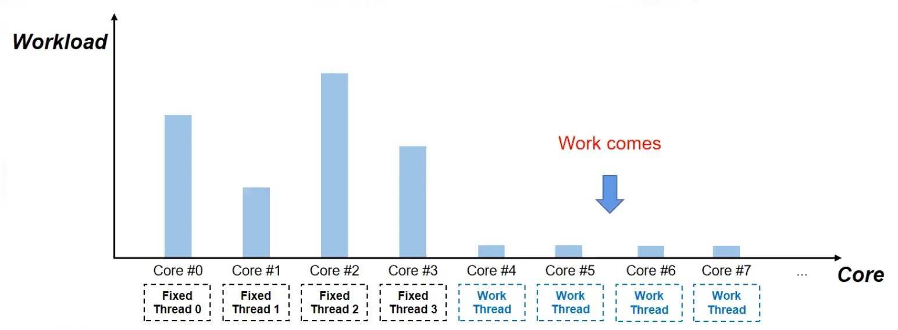
Unreal Parallel framework
虚幻并行框架
Two types of threads
两种类型的螺纹
-
Named Thread
命名线程
-
Created by other systems and attached to parallel framework
由其他系统创建并附加到并行框架
-
-
Worker Thread
工人线程
-
Three priorities: high, middle and low
三个优先事项：高、中、低
-
The number is determined by the number of CPU cores
该数量由 CPU 内核的数量决定
-
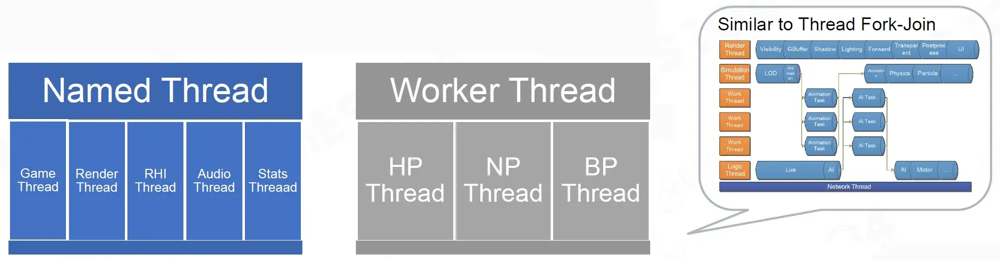
Taskgraph
任务图
A directed acyclic graph
有向无环图
-
Node→Task
节点→任务
-
Edge→Dependency
边缘→依赖
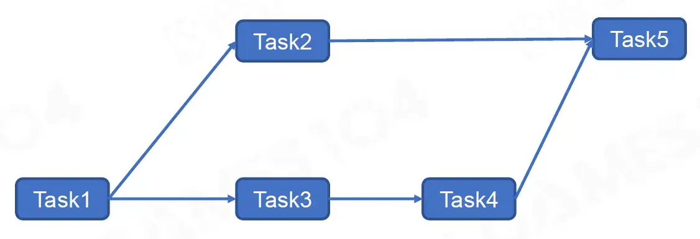
Building Task Graph by Links
通过链接构建任务图
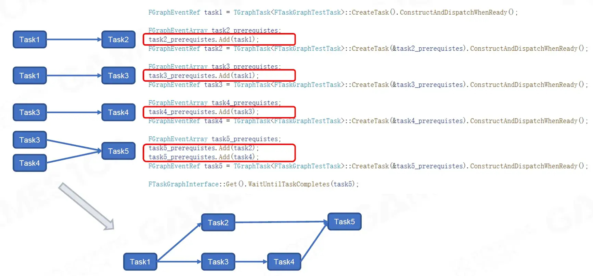
Job System
任务系统
Coroutine
协程
Allows for multitaskingby creating jobs that run inside of coroutines
通过创建在协程内运行的任务，允许多任务处理
-
Coroutine is a lightweight execution context (include a user provided stack, registers…)
协程是一个轻量级的执行上下文（包括用户提供的堆栈、寄存器等）
-
Execution is collaborative, means a coroutine can switch to another interactively
执行是协作的，意味着协程可以交互式地切换到另一个协程
-
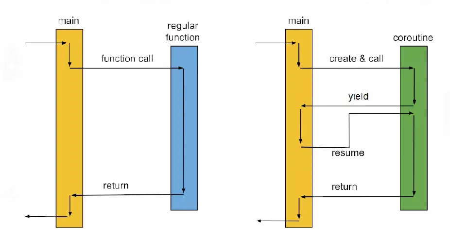
Coroutine vs. Thread
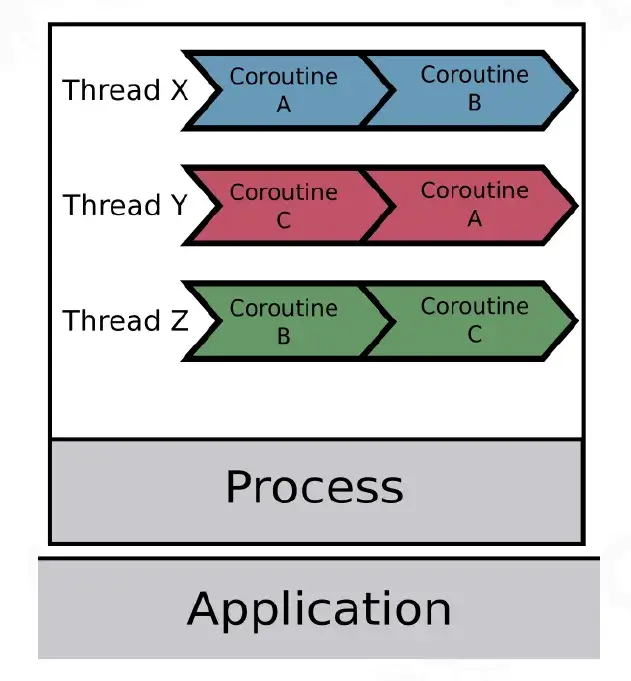
Coroutine
协程
-
Scheduled by programmers
由程序员安排
-
To be executed within a thread
在线程内执行
-
Context switch is faster without kernel switch
无需内核切换，上下文切换速度更快
Thread
线程
-
Scheduled by operating system
按操作系统计划
-
Resides in a process
过程中的残留物
-
Context switch is costly with kernel switch
内核切换的上下文切换成本很高
Stackful Coroutine
堆叠式协程
Coroutine owns an independent runtime stack which is reserved after yield
Coroutine 拥有一个独立的运行时堆栈，该堆栈在 yield 后保留
-
Enable to yield from within a nested stackframe
允许在嵌套的堆栈框架内屈服
-
Use local variables just like normal functions
像普通函数一样使用局部变量
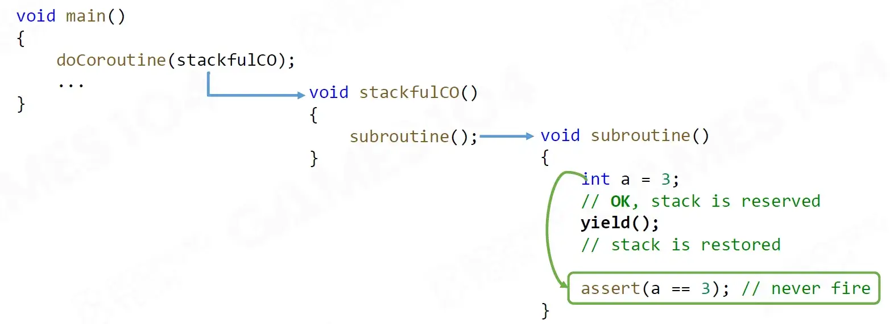
在 C++ 中，
yield()通常用于多线程编程中，来让出当前线程的执行权。具体来说，它的作用取决于你使用的线程库或框架。以下是几种常见的使用情况：
std::this_thread::yield()（在 C++11 及以后的版本中）：
这是 C++ 标准库中的一个函数，声明在
<thread>头文件中。
std::this_thread::yield()使当前线程暂停执行，并允许其他同等优先级的线程有机会运行。它通常用于在多线程环境中优化资源使用，尤其是在忙等待的情况下。示例代码：
2
3
4
5
6
7
8
9
10
11
12
13
14
15cppCopy Code#include <iostream>
#include <thread>
void worker() {
for (int i = 0; i < 10; ++i) {
std::cout << "Working...\n";
std::this_thread::yield(); // 让出线程执行权
}
}
int main() {
std::thread t(worker);
t.join();
return 0;
}
std::experimental::coroutine_handle::yield_value()（在 C++20 协程中）：
- 在 C++20 中，协程引入了更复杂的机制，如
std::experimental::coroutine_handle::yield_value()，用于协程的挂起和恢复。- 这允许在协程中挂起执行，并在之后恢复，提供了更高级的控制流功能。
在使用
yield()时，需要注意它不会阻塞当前线程，而只是提示调度器当前线程愿意暂停执行。调度器将决定是否实际暂停当前线程以及何时恢复它。yield()是一种建议，具体的调度行为取决于底层操作系统的线程调度策略。 总的来说，
yield()用于提高多线程程序的效率，避免在某些情况下导致不必要的资源占用或提高线程的响应性。
Stackless Coroutine
无堆栈协程
Coroutine has no independent runtime stack to be reserved when yield
Coroutine 在 yield 时没有要保留的独立运行时堆栈
-
Only the top-levelroutine may yield (subroutines have no idea where to return without stack)
只有顶层例程可能会产生结果（子程序不知道在没有堆栈的情况下返回哪里）
-
The data that is required to resume execution should be stored separately from the stack
恢复执行所需的数据应与堆栈分开存储
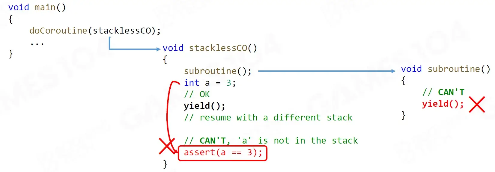
Stackful vs. Stackless Coroutine
堆叠式与无堆叠式协程
Stackful Coroutine
堆叠式协程
-
More powerful with enable to yield from within a nested stackframe
更强大，支持从嵌套堆栈框架中屈服
-
Needs more memory to reserve stacks for each coroutine
需要更多内存为每个协程保留堆栈
-
Coroutine context switch takes more time
子程序上下文切换需要更多时间
Stackless Coroutine
无堆栈协程
-
Unable to yield from within a subroutine
无法从子例程中屈服
-
More difficult to use without a stack to reserve data
如果没有堆栈来保留数据，则更难使用
-
No extra memory needed for coroutine’s stack
协程堆栈不需要额外的内存
-
Faster context switch
更快的上下文切换
Fiber-based Job System
基于光纤的任务系统
Allows for multitasking by creating jobs instead of threads
通过创建任务而不是线程来实现多任务处理
-
Fiber is like coroutine except that fiber is scheduled by a scheduler
光纤类似于协程，只是光纤是由调度器调度的
-
Thread is the execution unit while fiber is the context
线程是执行单元，光纤是上下文
-
One thread for each processor core to minimize the context switch overhead
每个处理器核心一个线程，以最大限度地减少上下文切换开销
-
-
Job is executed within the context of a fiber
任务在光纤上下文中执行
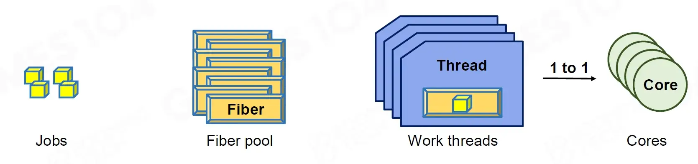
One Work Thread for One Core
一个核心对应一个工作线程
To minimize the overhead of thread context switch
尽量减少线程上下文切换的开销
-
Multiple work threads for a single core still suffers from context switch
单个核心的多个工作线程仍然受到上下文切换的影响
-
One work thread for each core eliminates context switch
每个核心都有一个工作线程，消除了上下文切换
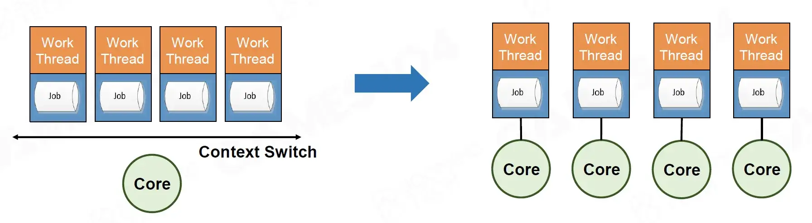
Fiber-based Job System
基于光纤的任务系统
-
Thread is the execution unit while fiber is the context
线程是执行单元，光纤是上下文
-
Job is executed within a fiber
任务在光纤内执行
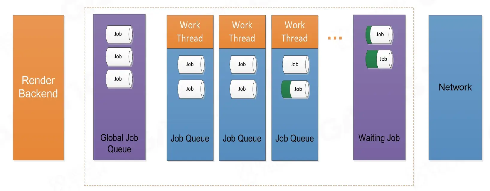
Job Scheduler -Global Job
LIFO and FIFO Mode
LIFO 和 FIFO 模式
-
Schedule Model
计划模型
-
First In First Out (FIFO)
先进先出（FIFO）
-
Last In First Out (LIFO)
后进先出（LIFO）
-
-
LIFO Mode
-
In most case, job dependency is tree like
在大多数情况下，工作依赖性是树状的
-
Some system add jobs occasionally but wait them immediately
有些系统偶尔会添加任务，但会立即等待
-
Job Scheduler -Job Dependency
Job Scheduler -Job Stealing
Pros and Cons of Job System
Pros
-
Easy to implement task schedule
易于实施的任务计划
-
Easy to handle task dependency
易于处理任务依赖关系
-
Job stack is isolated
任务堆栈是隔离的
-
Avoid frequency context switch
避免频率上下文切换
Cons
-
C++ does not natively support fiber
C++ 本身不支持光纤
-
Implementation is different between OS
操作系统之间的实现不同
-
Has some restrictions (thread_local invalid)
有一些限制（thread_local 无效）
Programming Paradigms
编程范式
Procedure-oriented Programming
面向过程的程序设计
Object-oriented Programming
面向对象程序设计
Programming Paradigm of Game Engine
游戏引擎的编程范式
-
There are many different programming paradigms
有许多不同的编程范式
-
Inpractice, some paradigms are widely used
在实践中，一些范式被广泛使用
-
Programming languages aren’t always tied to a specific paradigm
编程语言并不总是与特定的范式联系在一起
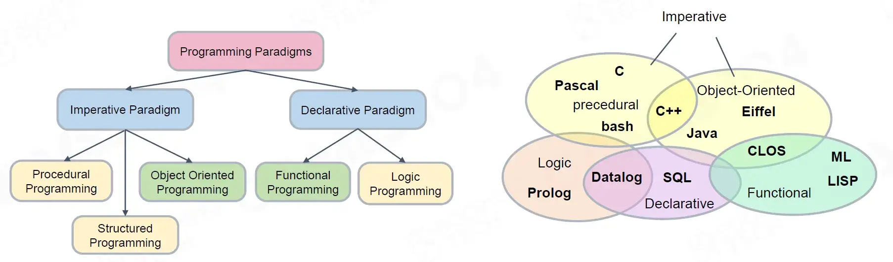
Procedural Oriented Programming (POP)
面向过程编程（POP）
-
Follows a step-by-step approach to break down a task into a collection of variables and routines (or subroutines) through a sequence of instructions
遵循循序渐进的方法，通过一系列指令将任务分解为变量和例程（或子程序）的集合
-
Impossible to write a game engine in this way
无法以这种方式编写游戏引擎
-
Data is not well maintained.
数据没有得到很好的维护。
-
A co-relation with real-world objects is difficult
与现实世界中的物体建立关联是困难的
-
Object-Oriented Programming (OOP)
面向对象程序设计（OOP）
-
Based on the concept of “objects”, which can contain data and code
基于“对象”的概念，可以包含数据和代码
-
It’s natural for human to abstract from real world in an object-oriented way
人类以面向对象的方式从现实世界中抽象出来是很自然的
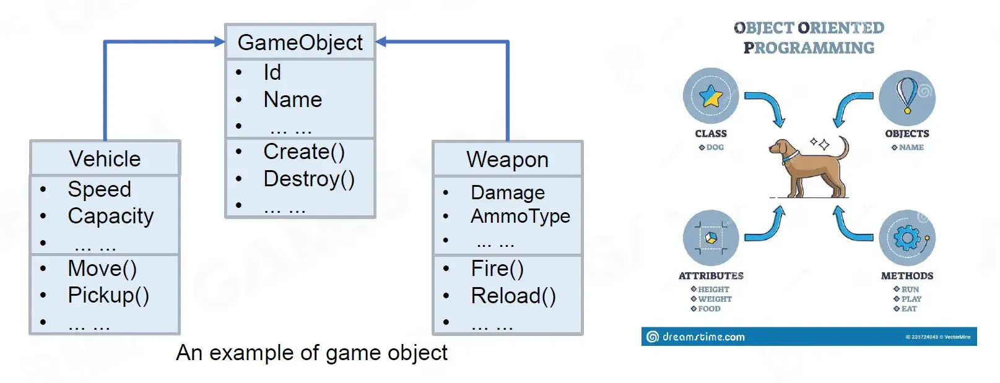
Problems of OOP : Where to Put Codes?
面向对象编程的问题：把代码放在哪里？
当攻击者击中对象时，是执行 Attacker.doDamageTo() 还是 Victim.receiveDamage()？
当玩家接触敌人时，是执行 Player.attachTo() 还是 Enemy.isAttached()？
Problems of OOP：Method Scattering in Inheritance Tree
面向对象程序的问题：继承树中的方法分散
-
Hard to know which parent class has the method implementation
很难知道哪个父类有方法实现
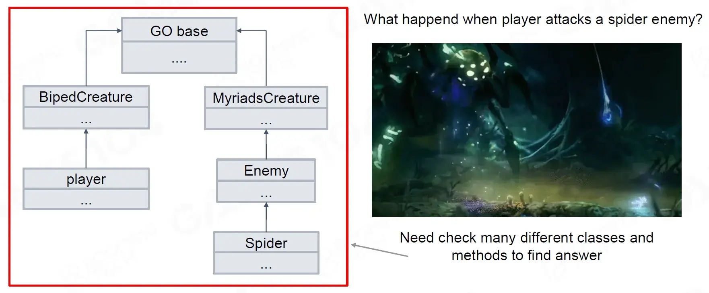
为了找到玩家攻击敌人的代码逻辑，有可能从继承树中套好几层才找到代码。
Problems of OOP : Messy Based Class
面向对象编程的问题：基于混乱的类
1 | |
Parts of methods of a “messy base class”
“混乱的基层”的部分方法（代码可读性差）
Find some methods in common? Put it to the base class! → We get a messy base class
找到一些共同的方法吗？把它放在基层阶级！→ 我们得到了一个混乱的基础阶级
This is not the best OO design, and it certainly is possible to make a better one. But also, often code ends up being like this, even if no one wanted it that way.
这不是最好的 OO 设计，当然有可能做出更好的 OO 设计。 但是，即使没有人希望这样，代码最终也往往是这样的。
Problems of OOP : Performance
面向对象编程的问题：性能
-
Memory scattering
记忆散射
-
Jungle of virtual functions
虚拟功能丛林
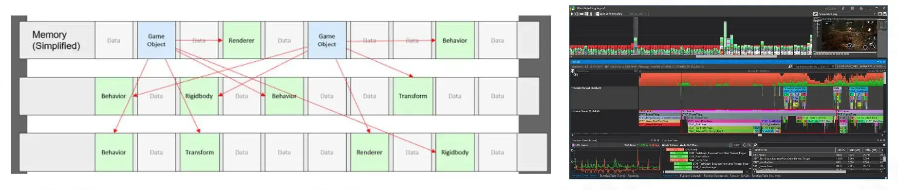
面向对象编程可能导致运行时地址分散，Cache 命中率低，性能差。
Problems of OOP : Testability
面向对象编程的问题：可测试性
-
Unit Testing
单元测试
-
OO designs often need a lot of setup to test
OO 设计通常需要大量的设置来测试
-
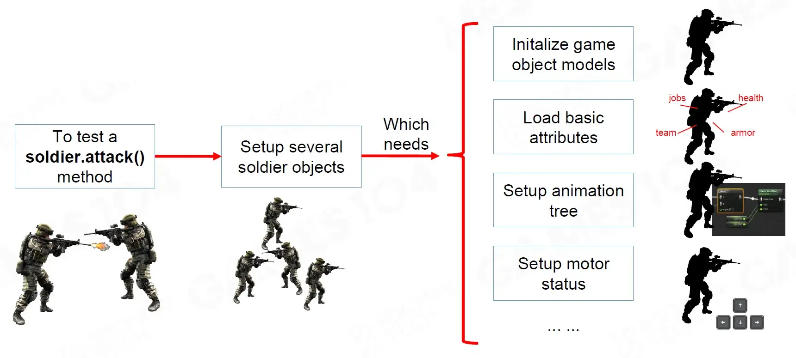
Data-Oriented Programming (DOP)
面向数据编程（DOP）
Processor-Memory Performance Gap
处理器内存性能差距
-
Performance of memory grows much slowly than processor
内存的性能增长速度比处理器慢
-
The gap is even larger which make memory becomes the main bottleneck of performance CPU
差距更大，使内存成为性能 CPU 的主要瓶颈
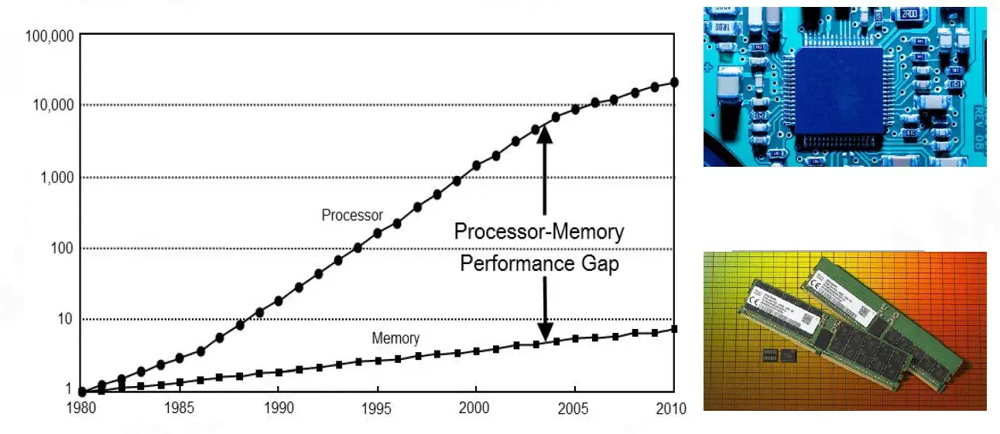
The Evolution of Memory -Cache
内存缓存的演变
Add cache to speed up data reading
添加缓存以加快数据读取速度
-
L1: Ranges between 256KB to no more than 1MB, but even that is sufficient.
L1：范围在 256KB 到不超过 1MB 之间，但即使这样也足够了。
-
L2: Usually a few megabytes and can go up to 10MB.
L2：通常为几兆字节，最高可达 10MB。
-
L3: Larger than L1 and L2, varies from 16MB to 64MB, shared between all cores.
L3：大于 L1 和 L2，大小从 16MB 到 64MB 不等，在所有内核之间共享。
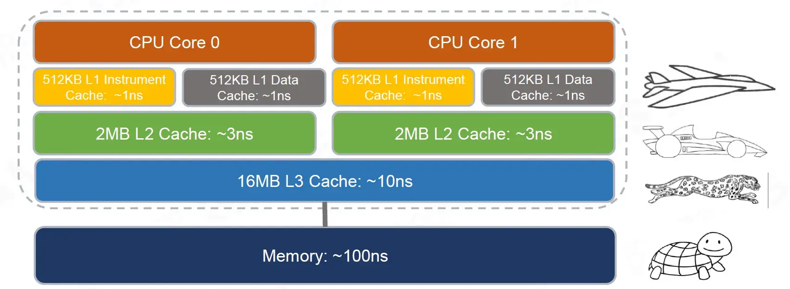
Principle of Locality
地方性原则
the tendency of a processor to access the same set of memory locations repetitively over a short period of time
处理器在短时间内重复访问同一组存储位置的趋势
Spatial Locality
空间位置
-
The use of data elements within relatively close storage locations
在相对较近的存储位置内使用数据元素
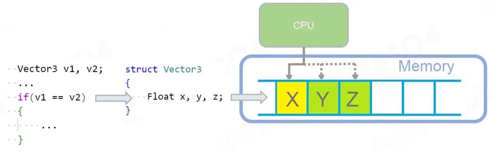
Single instruction multiple data (SIMD)
单指令多数据（SIMD）
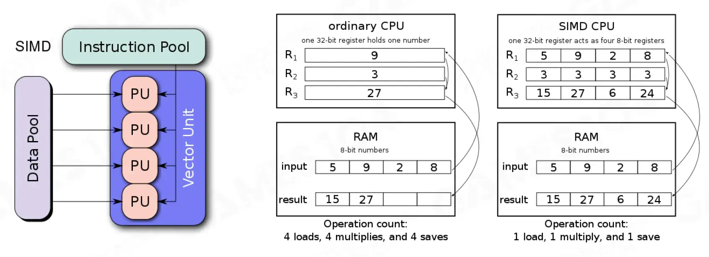
LRU (Least Recently Used)
LRU（最近最少使用）
-
When cache is full, discards the least recently usedcache-linefirst.
当缓存已满时，首先丢弃最近最少使用的缓存行。
-
Record the “used time” of each cache line
记录每个缓存行的“使用时间”
-
Discard the most “oldest used” cache lineeach time
每次丢弃“最旧的已使用”缓存行
-
Update “used time” when access data of cache line
访问缓存行数据时更新“已用时间”
-
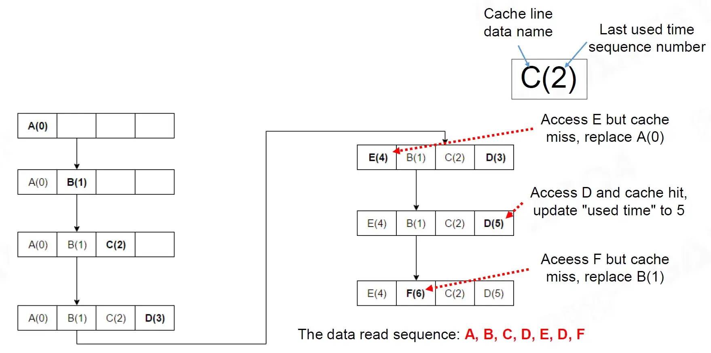
Cache Line
缓存行
-
Data is transferred between memory and cache inblocks of fixed size (typically 64 bytes), called cache lines or cache blocks.
数据在固定大小（通常为 64 字节）的内存和缓存块之间传输，称为缓存行或缓存块。
-
A cache can only hold a limited number of lines, determined by the cache size. For example, a 64 kilobyte cache with 64-byte lines has 1024 cache lines.
缓存只能容纳有限数量的行，由缓存大小决定。例如，具有 64 字节行的 64KB 缓存有 1024 条缓存行。
-
Every time you load any memory at all, you are loading in a full cache line of bytes
每次加载任何内存时，都会加载一个完整的字节缓存行
Cache Miss
未命中缓存
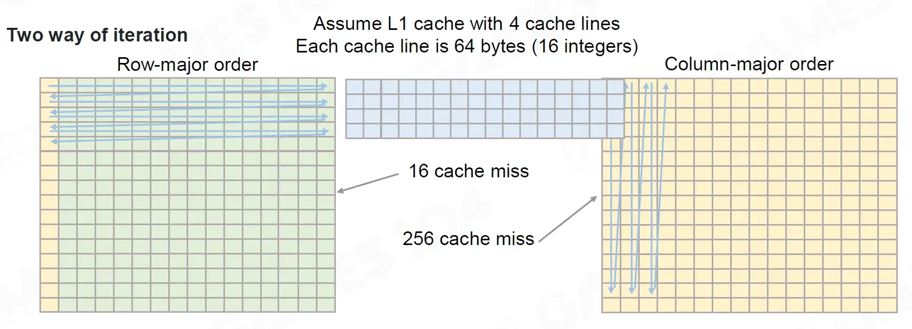
-
When cahce is full (loaded 4 rows), new rows will replace the oldest one
当 cahce 已满（加载 4 行）时，新行将替换最旧的行
-
When a elements not in cache, a whole row will be loaded
当一个元素不在缓存中时，将加载整行
Data-Oriented Programming (DOP)
面向数据编程（DOP）
1. Datais all we have
我们只有数据
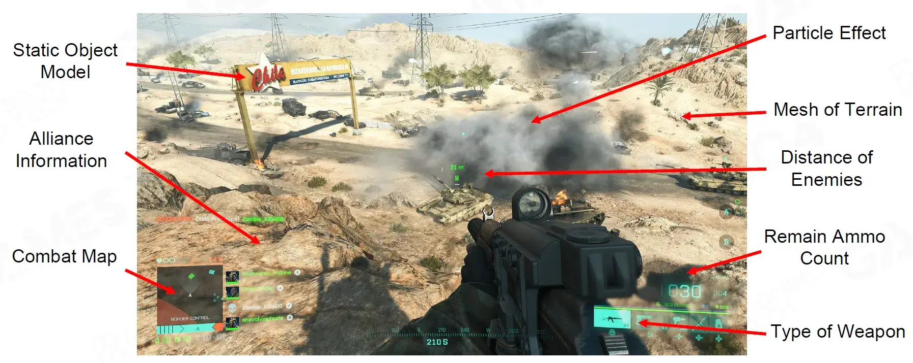
示例：假设你正在开发一个游戏，并需要处理大量的游戏实体（例如玩家、敌人、NPC 等）。
在面向对象编程（OOP）中，你可能会为每种实体创建一个类，并将属性和方法打包在一起：
2
3
4
5
6
7
8pythonCopy Codeclass Player:
def __init__(self, x, y):
self.x = x
self.y = y
def move(self, dx, dy):
self.x += dx
self.y += dy 而在面向数据编程（DOP）中，你会将实体的属性分开存储，并编写独立的函数来操作这些属性：
2
3
4
5
6
7
8
9pythonCopy Code # 使用列表存储所有玩家的位置数据
player_positions = [(0, 0), (5, 5), (10, 10)]
def move_player(index, dx, dy):
x, y = player_positions[index]
player_positions[index] = (x + dx, y + dy)
# 移动第一个玩家
move_player(0, 1, 1) 在这个例子中，
player_positions列表存储所有玩家的位置数据。move_player函数则直接操作这些数据，不涉及复杂的对象方法。这种方式可以提高性能，尤其是在处理大量数据时，因为它减少了对象的开销，并且更容易进行批量操作和并行处理。
Instructions are Data Too
指令也是数据
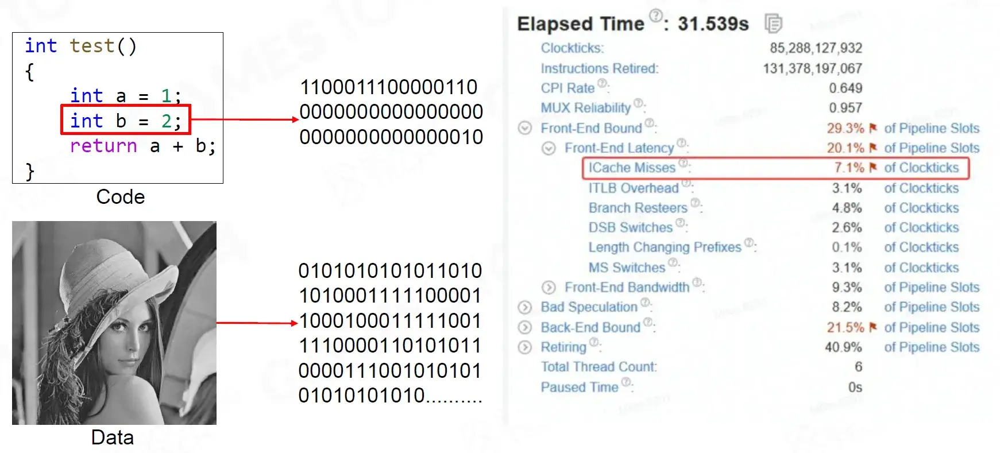
Code 和 Data 都是内存中的数据。
Keep Code and Data Tight in Memory
保持代码和数据在内存中的紧密性
-
Keep both code and data small and process in bursts when you can
尽可能保持代码和数据的小规模，并以突发的方式处理
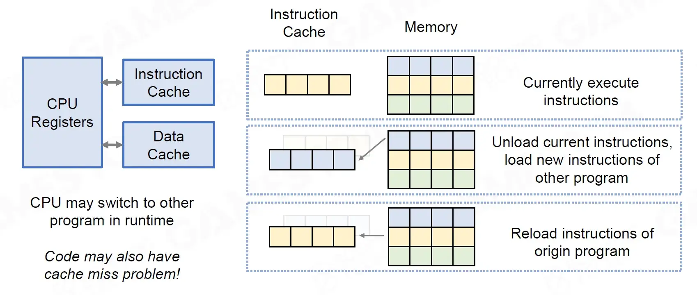
Performance-Sensitive Programming
性能敏感编程
Reducing Order Dependency
减少订单依赖
-
The work being done because of a misprediction will have to be undone
由于预测失误而完成的任务将不得不撤销
-
Never modify variables once they are initially assigned
一旦变量最初被赋值，就永远不要修改它们
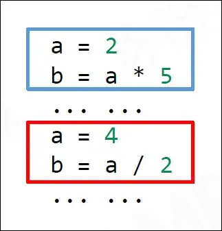
These 2 parts of code will not be excuted in parallel
这两部分代码不会并行执行
because variables a & b is used before
因为之前使用了变量 a 和 b
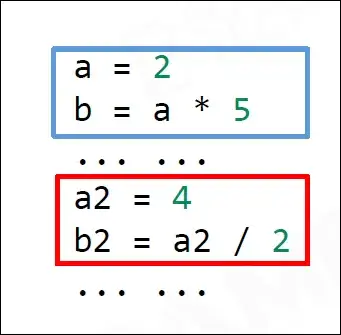
Compiler allow these 2 parts of code to execute in parallel
编译器允许这两部分代码并行执行
Actually, compiler use static single-assignment (SSA) to deal with simple situation like this
实际上，编译器使用静态单赋值（SSA）来处理这样的简单情况
False Sharing in Cache Line
缓存行中的错误共享
-
Ensuring any rapidly updated variables are kept local to the thread
确保任何快速更新的变量都保持在线程的本地
-
Cache contension
缓存争议
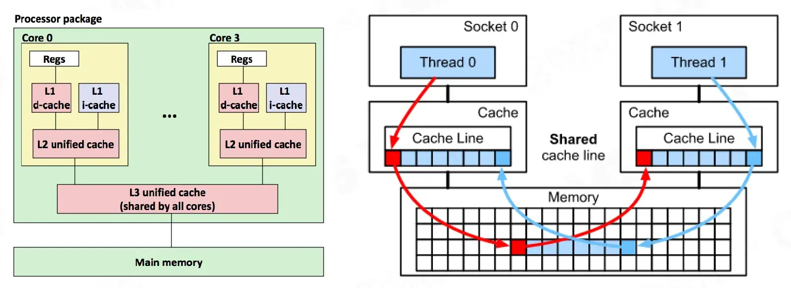
Branch prediction
分支预测
-
CPU will prefetch instructions and data ahead
CPU 将提前预取指令和数据
-
Use branch prediction technics to decide what to prefetch
使用分支预测技术来决定预取什么
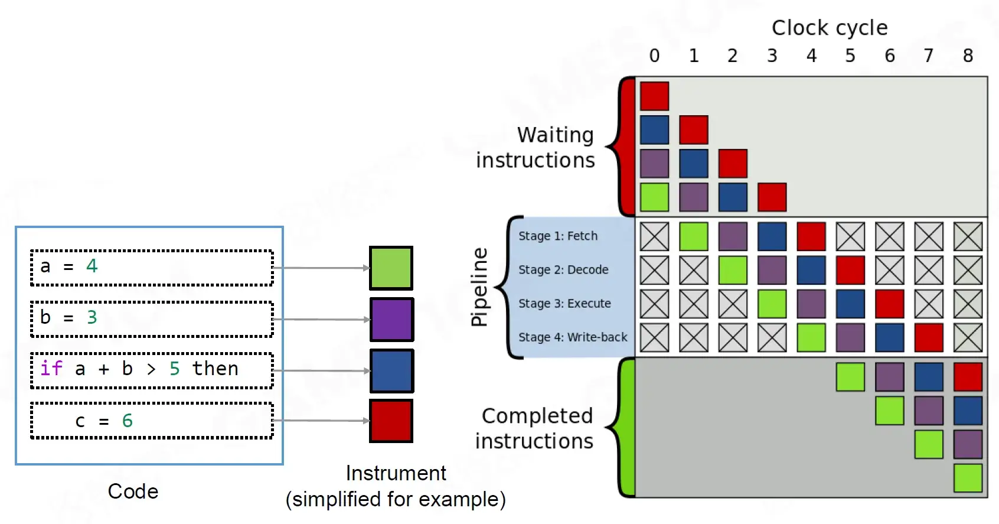
-
To avoid branch mis-prediction
避免分支预测错误
1 | |
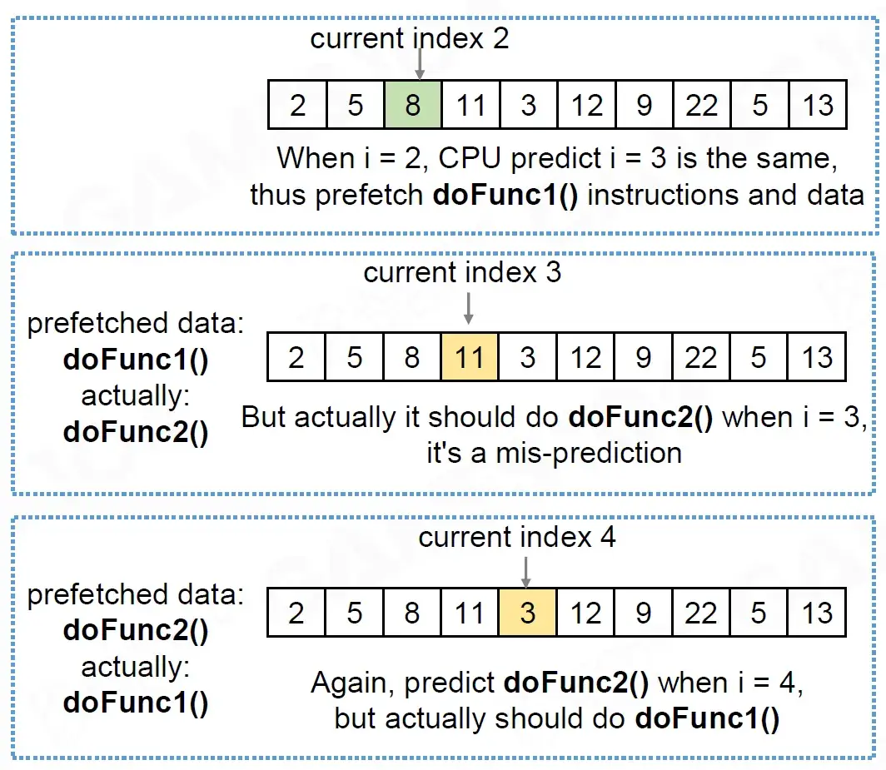
如果代码跳着执行，则 Cache 容易未命中，降低运行速度。
1 | |
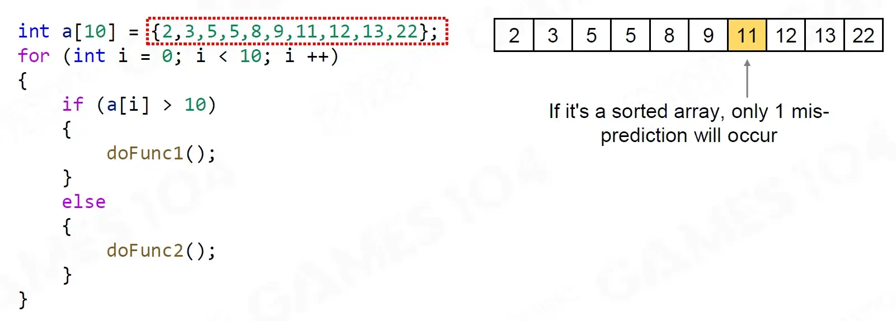
如果事先将序列排序好，代码就不会跳着执行。
Existential Processing
存在加工
1 | |
This code also faces branch prediction problems
此代码还面临分支预测问题
Unlike the example before, actor_array changes every tick
与前面的示例不同，actor_array 每一刻都会发生变化
1 | |
Completely avoid “if-else”
完全避免“if-else”
By maintaining 2 lists of different actors, we could avoid branch mis-precondition
通过维护 2 个不同参与者的列表，我们可以避免分支预处理错误
Performance-Sensitive Data Arrangements
性能敏感数据安排
Reducing Memory Dependency
减少内存依赖
- (chained memory lookups/accesses by pointers)
（通过指针进行链式内存查找 / 访问）
-
Load the first cache line 1
加载第一个缓存行 1
-
Get the next node address
获取下一个节点地址
-
Cache miss
缓存未命中
-
Unload the old one, and load another cahce line 2
卸下旧的，再加载另一个 Cache 线 2
-
Repeating
重复
Array of Structure vs. Structure of Array
数组的结构与结构的数组
SOA 的地址排列要比 AOS 更连续。
If we want to read the position of all particles, SOA has better performance
如果我们想读取所有 particles 的位置，SOA 的性能更好。
Entity Component System (ECS)
实体组件系统（ECS）
Recap: Component-based Design
回顾：基于组件的设计
-
Code example
代码示例
Entity Component System (ECS)
实体组件系统（ECS）
A pattern to structure game code in a data-oriented way for maximum performance
一种以面向数据的方式构建游戏代码以获得最大性能的模式
-
Entity: an ID refer to a set of components
实体：ID 指一组组件
-
Component: the data to be processed by systems, no logic at all
组件：系统要处理的数据，根本没有逻辑
-
System: where the logic happens, read/write component data
系统：逻辑发生的地方，读/写组件数据
Unity Data-Oriented Tech Stack (DOTS)
面向 Unity 数据的技术栈（DOTS）
A combination of technologies that work together to deliver a data-oriented approach to coding
结合多种技术，共同提供面向数据的编码方法
-
The Entity Component System (ECS) provides data-oriented programming framework
**实体组件系统（ECS）**提供面向数据的编程框架
-
The C# Job System provides a simple method of generating multithreaded code
C# 任务系统提供了一种生成多线程代码的简单方法
-
The Burst Compiler generates fast and optimized native code
Burst 编译器生成快速且优化的本机代码
Unity ECS – Archetype
A specific combination of components
Archetype 是组件的特定组合
-
Entities are grouped into archetypes
实体被分组到 archetype 中
Unity ECS –Data Layout in Archetype
Unity ECS——Archetype 中的数据布局
Same components in an archetype are packed tightly into chunks for cache friendliness
原型中的相同组件被紧密地打包成块，以便于缓存
-
A chunk is a block of memory with fixed size, i.e. 16KB
块是固定大小的内存块，即 16KB
Unity ECS –System
Unity ECS——系统
1 | |
Unity C# Job System
Unity C# 任务系统
Make it easier forusers to write correct multithreaded code
使用户更容易编写正确的多线程代码
-
A job is a small unit of work that performs a specific task
作业是执行特定任务的小工作单元
-
Jobs can depend on other jobs to complete before they run
作业在运行之前可以依赖其他作业来完成
1 | |
1 | |
Unity C# Job System–Native Container
Unity C# 作业系统——原生容器
A type of shared memory that can be accessed inside jobs
一种可以在作业内部访问的共享内存
-
Job cannot output result without native container (all data is a copy)
没有本机容器，作业无法输出结果（所有数据都是副本）
-
Native containers support all safety checks
本地容器支持所有安全检查
-
Native containers need to be disposed manually
本地容器需要手动处理
1 | |
Unity C# Job System –Safety System
Unity C# 作业系统-安全系统
Support safety checks (out of bounds checks, deallocation checks, race condition checks) for jobs
支持作业的安全检查（越界检查、取消分配检查、竞争条件检查）
-
Send each job a copy of data it needs to operate on to eliminate the race condition
向每个作业发送一份它需要操作的数据副本，以消除竞争条件
-
Job can only access blittable data types (reference is invalid)
作业只能访问 blitable 数据类型（引用无效）
-
1 | |
High-Performance C# and Burst Compiler
高性能 C# 和 Burst 编译器
High-Performance C# (HPC#) is a subset of C#
高性能 C#（HPC#）是 C# 语言的一个子集
-
Give up on most of the standard library (StringFormatter, List, Dictionary, and etc.)
放弃大部分标准库（StringFormatter、List、Dictionary 等）
-
Disallow allocations, reflection, the garbage collector and virtual calls
不允许分配、反射、垃圾收集器和虚拟调用
Burst Compiler translates from IL/.NET bytecode to highly optimized native code using LLVM
Burst 编译器从 IL/ 转换而来。使用 LLVM 将 NET 字节码转换为高度优化的本机代码
-
Generate expected machine code for specific platforms
为特定平台生成预期的机器代码
Unreal Mass Framework
MassEntity–Entity
MassEntity–实体
-
FMassEntityHandle is pure ID as ECS Entity
FMassEntityHandle 是 ECS 实体的纯 ID
-
Index indicates the index in Entities array in FMassEntityManager
索引表示 FMassEntityManager 中实体数组中的索引
-
SerialNumberas salt to Index
序列号作为索引的盐
-
Release an old entity
释放旧实体
-
Create a new entity with the same Index
使用相同的索引创建新实体
-
SerialNumberis increased so the ID will be different
序列号增加，因此 ID 将不同
-
1 | |
1 | |
MassEntity–Component
MassEntity——组件
-
Same as Unity, each type of entity has an Archetype
与 Unity 相同，每种类型的实体都有一个原型
-
Fragments and tagsare componentsfor entities
片段和标记是实体的组成部分
-
Tags are constant Boolean components to filter unnecessary processing
标签是用于过滤不必要处理的常量布尔组件
1 | |
MassEntity–Systems
MassEntity——系统
-
ECS Systems in MassEntity are Processor sderived from UMassProcessor
MassEntity 中的 ECS 系统是从 UMassProcessor 派生的处理器
-
Two important interface:
ConfigureQueries()andExecute(...)两个重要的接口：
ConfigureQueries（）和Execute（…）
1 | |
MassEntity–Fragment Query
MassEntity——片段查询
-
Interface ConfigureQueries() runs when the processor is initialized
处理器初始化时，接口
ConfigureQueries()运行 -
Use FMassEntityQuery to filter archetypes of entities meeting systems requirements
使用 FMassEntityQuery 筛选满足系统要求的实体原型
-
FMassEntityQuery caches filtered archetypes to accelerate future executions
FMassEntityQuery 缓存经过筛选的原型以加速未来的执行
1 | |
MassEntity–Execute
MassEntity——执行
Conclusions
结论
Everything You Need Know About Performance
关于性能，你需要知道的一切
这张图展示了 CPU 各种操作所耗的时间。
References
Cache
- Entity Component Systems & Data Oriented Design, Unity Training Academy 2018-2019, #3 https://aras-p.info/texts/files/2018Academy - ECS-DoD.pdf
- Computer Architecture: A Quantitative Approach 5th Edition by John L. Hennessy , David A. Patterson
- What is the bandwith speed of L1,L2 and L3 Cache https://linustechtips.com/topic/34636-what-is-the-bandwith-speed-of-l1l2-and-l3-cache/
- Intel Core i9-9900K CPU Review: More Cores, Speed, and Higher Price https://www.overclockers.com/intel-core-i9-9900k-cpu-review-more-cores-speed-and-higher-price/
- Wikipedia -Cache replacement policieshttps://en.wikipedia.org/wiki/Cache_replacement_policies#Least_recently_used_(LRU)
Parallel Programming
-
Operating System Basics (Brian Will) https://linuxwheel.com/operating-system-basics-brian-will/
-
Parallel computing via multicore computers allow high processing capacity https://www.teldat.com/blog/parallel-computing-bit-instruction-task-level-parallelism-multicore-computers/
-
Internals of a Thread Pool https://salonegupta.wordpress.com/2017/12/28/internals-of-a-java-thread-pool/
-
CPP Reference -Atomic https://en.cppreference.com/w/cpp/atomic
-
TBB Tutorial https://www.inf.ed.ac.uk/teaching/courses/ppls/TBBtutorial.pdf
-
Parallel Programming Models and Paradigms http://www.cse.hcmut.edu.vn/~hungnq/courses/pp/backup.2/thamkhao/Parallel Programming Paradigms.pdf
-
Parallel Paradigms and Parallel Algorithms https://pdc-support.github.io/introduction-to-mpi/05-parallel-paradigms/index.html
-
Developing Parallel Programs -A Discussion of Popular Models https://www.oracle.com/technetwork/server-storage/solarisstudio/documentation/oss-parallel-programs-170709.pdf
-
Modern Fortran: Building efficient parallel applications MEAP V13https://livebook.manning.com/book/modern-fortran/welcome/v-13/
-
Priority Inversion http://www.embeddedlinux.org.cn/rtconforembsys/5107final/LiB0101.html
-
What is a Thread in OS and what are the differences between a Process and a Thread? https://afteracademy.com/blog/what-is-a-thread-in-os-and-what-are-the-differences-between-a-process-and-a-thread
-
Understanding operating systems https://www.uow.edu.au/student/learning-co-op/technology-and-software/operating-systems/
Parallel Frameworks in Game Engine
-
GDC2015 -Parallelizing the Naughty Dog Engine Using Fibers https://www.gdcvault.com/play/1022186/Parallelizing-the-Naughty-Dog-Engine
-
GCAP 2016: Parallel Game Engine Design -Brooke Hodgman https://www.youtube.com/watch?v=JpmK0zu4Mts
-
Java -Thread Pools https://www.logicbig.com/tutorials/core-java-tutorial/java-multi-threading/thread-pools.html
-
C++20: Building a Thread-Pool With Coroutines https://blog.eiler.eu/posts/20210512/
-
Processes, threads, and coroutines https://subscription.packtpub.com/book/programming/9781788627160/1/ch01lvl1sec02/processes-threads-and-coroutines
-
UE 并发-TaskGraph 的实现和用法 https://zhuanlan.zhihu.com/p/398843895?utm_medium=social&utm_oi=1447486643037528064&utm_psn=1546525648855732224&utm_source=ZHShareTargetIDMore
-
Unreal Engine 5.0 Documentation -Tasks Systemhttps://docs.unrealengine.com/5.0/en-US/tasks-systems-in-unreal-engine/
-
UE4/UE5 的 TaskGraph https://cloud.tencent.com/developer/article/1897046
DOP
-
Programming Paradigms –Paradigm Examples for Beginners
-
GDC’cn 为实现极限性能的面向数据编程范式叶劲峰
-
Timeline of Computer History https://www.computerhistory.org/timeline/computers/
-
The Fetch and Execute Cycle: Machine Language https://math.hws.edu/javanotes-swing/c1/s1.html
-
Wikipedia-Single instruction, multiple data https://en.wikipedia.org/wiki/Single_instruction,_multiple_data
-
Linked List (Data Structure) https://devopedia.org/linked-list-data-structure
-
Sekiro: Shadows Die Twice -All Bosses [No Damage] https://www.youtube.com/watch?v=KPAvM2hcSH8
-
Ori 2 -Boss -Mora (Giant Spider) -Hard Difficulty https://www.youtube.com/watch?v=tuhrtBRLQPw
-
The Greatest Frame Loss of All Time https://www.youtube.com/watch?v=4efRYXuhVTA
-
Monster Hunter World | Great Sword Tutorial https://www.youtube.com/watch?v=X2vr8M3lQ88
-
Data-Oriented Design, Fabian R, CRC Press, 2018. https://www.dataorienteddesign.com/dodbook.pdf
-
OOP Is Dead, Long Live Data-oriented Design. NikolovS, Coherent Labs. CppCon2018. https://www.bilibili.com/video/BV1kW41117uw?p=66&vd_source=f12a5db552661d28e8507875c37983cd
-
Data-Oriented Design and C++, Acton M. Insomniac Games. CppCon2014. https://www.youtube.com/watch?v=rX0ItVEVjHc
-
Data-Oriented Design Resources: https://github.com/dbartolini/data-oriented-design
Unity DOTS
-
Getting Started with Unity DOTS https://nikolayk.medium.com/getting-started-with-unity-dots-part-1-ecs-7f963777db8e
-
Unity Manual -ParallelFor Jobs https://docs.unity3d.com/Manual/JobSystemParallelForJobs.html
-
Unity Learn -What is DOTS and why is it important https://learn.unity.com/tutorial/what-is-dots-and-why-is-it-important#
-
On DOTS: Entity Component System https://blog.unity.com/technology/on-dots-entity-component-system
-
Unite Los Angeles 2018 Keynotehttps://www.youtube.com/watch?v=alZ6wmwvck0&t=6434s
-
Building a Data-Oriented Future -Mike Acton https://www.youtube.com/watch?v=u8B3j8rqYMw
-
Getting started with Unity DOTS —Part 2: C# Job System https://nikolayk.medium.com/getting-started-with-unity-dots-part-2-c-job-system-6f316aa05437
Unreal Engine Mass Architecture
- UE5 MassEntityDocumentation, https://docs.unrealengine.com/5.0/en-US/overview-of-mass-entity-in-unreal-engine/
- UE5 的 ECS：MASS 框架（一）, quabqi, 2022, https://zhuanlan.zhihu.com/p/441773595
- UE5 的 ECS：MASS 框架（二）quabqi, 2022, https://zhuanlan.zhihu.com/p/446937133
- UE5 的 ECS：MASS 框架（三）, quabqi, 2022, https://zhuanlan.zhihu.com/p/477803528
Multimedia Material List
- Sekiro: Shadows Die Twice -All Bosses [No Damage] https://www.youtube.com/watch?v=KPAvM2hcSH8
- Ori 2 -Boss -Mora (Giant Spider) -Hard Difficulty https://www.youtube.com/watch?v=tuhrtBRLQPw
- Monster Hunter World | Great Sword Tutorial https://www.youtube.com/watch?v=X2vr8M3lQ88
- Review in Progress: Battlefield 2042https://www.destructoid.com/review-in-progress-battlefield-2042-ps5-version/
- Infographics: Operation Costs in CPU Clock Cycles, http://ithare.com/infographics-operation-costs-in-cpu-clock-cycles/